Индуктор для импульсного
осевого намагничивания магнитных систем с постоянными магнитами
ални (алнико) шаговых двигателей томографов для восстановления их
электромеханических свойств
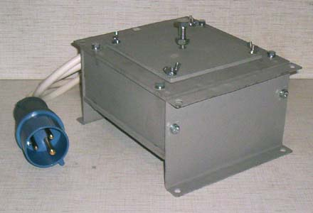
1. Введение
В трехфазных шаговых двигателях для томографических установок (рис. 1.1) в магнитной системе зубчатого ротора применяются постоянные магниты на основе сплавов ални/алнико (ЮНД/ЮНДК) [5]. Данный тип магнитов имеет невысокую коэрцитивную силу и подвержен размагничиванию обратным полем при аварийных режимах работы двигателя, а также из-за ударов и вибрации. Следствием этого является потеря мотором механической мощности, уменьшение вращающего момента, повышенное токопотребление и нагрев, пропуски шагов под нагрузкой, снижение максимальной выходной частоты вращения и максимальной частоты приемистости. Чтобы восстановить магнитные свойства, необходимо вновь намагнитить магнитную систему электродвигателя до насыщения [6, 10]. Намагничивание магнитной системы следует проводить в собранном виде (ротор двигателя вставлен в статор), чтобы не ухудшать ее магнитные свойства и характеристики мотора при последующей сборке.
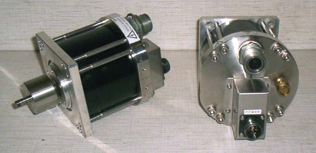
Рис. 1.1. Трехфазный шаговый двигатель для томографических установок.
2. Состав установки импульсного намагничивания шаговых двигателей
Для выполнения вышеупомянутой процедуры намагничивания магнитных систем шаговых электродвигателей на основе постоянных магнитов состава ални (алнико) была разработана, изготовлена и испытана установка в составе емкостного накопителя энергии 4 кДж 900 В [4] и импульсного индуктора с рабочей зоной (зоной намагничивания) диаметром 110 мм высотой 72 мм (намагничивание по высоте). Внешний вид установки показан на рис. 2.1. Она позволяет производить одноосное осевое намагничивание магнитных систем шаговых электродвигателей на основе сплавов ални (алнико) [5]. Полярность намагничивания задается полярностью подключения индуктора к емкостному накопителю. Установка может применяться в промышленных, бытовых и в полевых условиях. При отсутствии питающей сети 220 В 50 Гц установка может питаться от бортовой сети автомобиля или от аккумулятора через сравнительно маломощный преобразователь напряжения [7, 8].
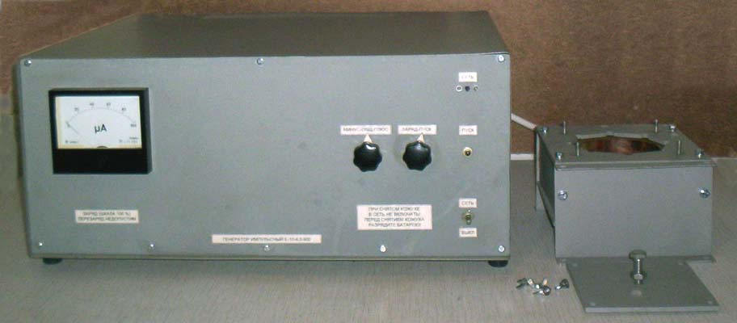
Рис. 2.1. Установка импульсного одноосного осевого намагничивания магнитных систем шаговых электродвигателей на основе постоянных магнитов состава ални (алнико).
3. Технические данные индуктора:
4. Конструкция импульсного индуктора
Импульсный индуктор представляет из себя цилиндрический соленоид с отверстием диаметром 110 мм и высотой 72 мм, помещенный в стальной корпус и снабженный силовым кабелем и разъемом для подключения к емкостному накопителю энергии (рис. 4.1 - 4.8). Индуктор может крепиться к рабочей поверхности посредством отверстий в боковых панелях. Намагничиваемый шаговый двигатель без фланцев устанавливается осью вниз в зоне намагничивания (рис. 4.8) и закрывается верхней стальной крышкой. Крышка фиксируется с помощью гаек-барашков М6, а мотор - с помощью винта М10. Намагничивание производится серией из 1 ... 3 импульсов тока при полном заряде емкостного накопителя.
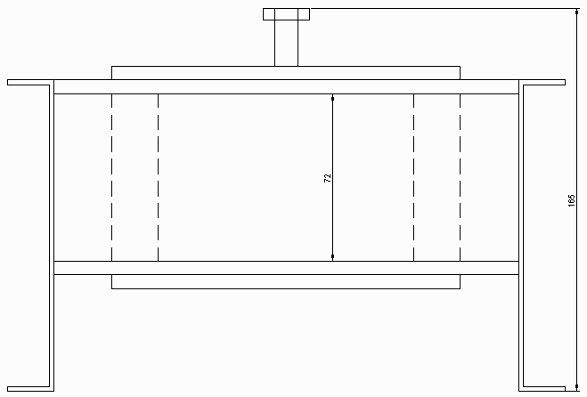
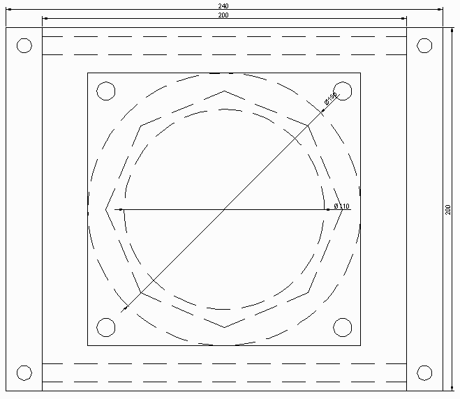
Рис. 4.1. Эскиз импульсного индуктора для намагничивания магнитной системы шаговых двигателей томографов.
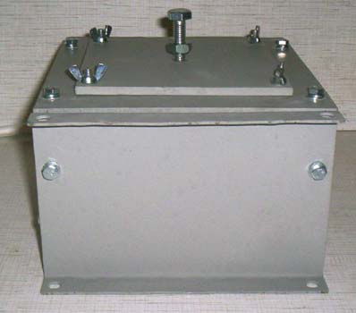
Рис. 4.2. Внешний вид импульсного индуктора для намагничивания шаговых двигателей: вид спереди с установленной крышкой.
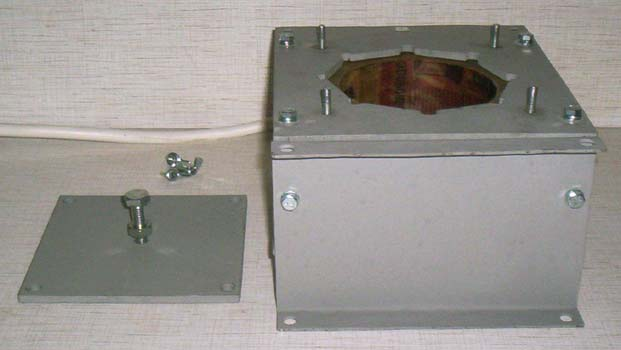
Рис. 4.3. Внешний вид импульсного индуктора для намагничивания шаговых двигателей: вид спереди со снятой крышкой.
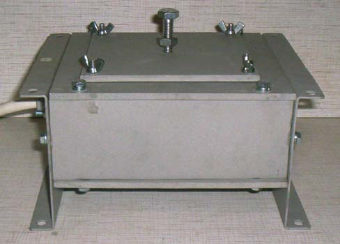
Рис. 4.4. Внешний вид импульсного индуктора для намагничивания шаговых двигателей: вид сбоку.
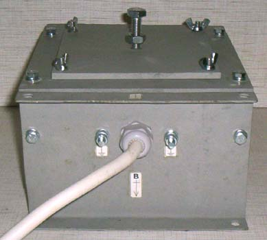
Рис. 4.5. Внешний вид импульсного индуктора для намагничивания шаговых двигателей: вид сзади.
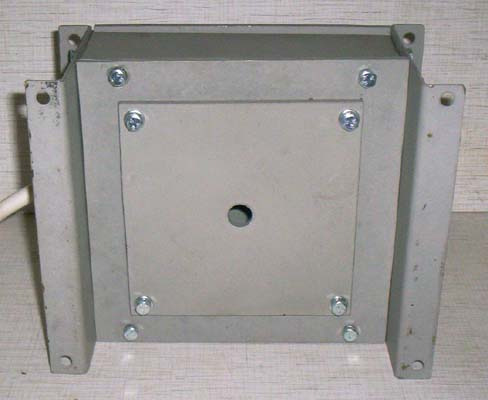
Рис. 4.6. Внешний вид импульсного индуктора для намагничивания шаговых двигателей: вид снизу.
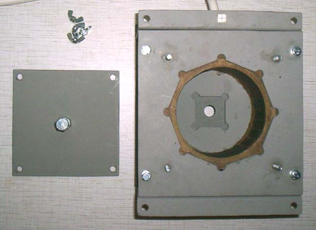
Рис. 4.7. Внешний вид импульсного индуктора для намагничивания шаговых двигателей: вид сверху со снятой крышкой.
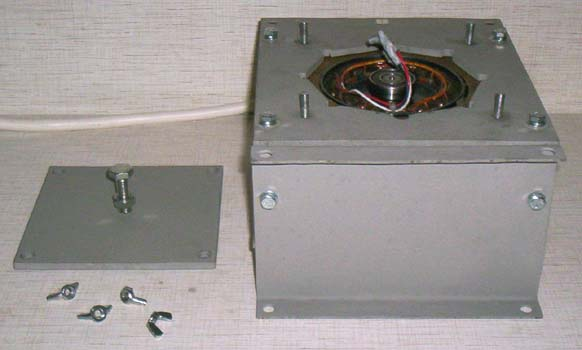
Рис. 4.8. Внешний вид импульсного индуктора для намагничивания шаговых двигателей: вид спереди со снятой крышкой и установленным шаговым двигателем без фланцев.
5. Расчет катушки индуктора
Расчет параметров катушки индуктора, импульса тока и магнитной индукции в ней выполнен с помощью программ Coil [1] и UNI [3]. Результаты расчета показаны на рис.5.1 и 5.2. Катушка намотана на оправке медной шиной прямоугольного сечения 2.4 х 1.6 мм2 (приведенный диаметр круглого провода в пересчете на площадь сечения 2.211 мм). Число витков примерно 215, расчетное активное сопротивление 0.3827 Ом, расчетная индуктивность 5.022 мГн. Емкостной накопитель энергии 4 кДж 900 В [4] создает в катушке импульс тока амплитудой примерно 780 А и длительностью примерно 20 мс. При этом расчетное амплитудное значение магнитной индукции в центре катушки составляет 1.412 Тл, что вполне достаточно для намагничивания сплавов ални (алнико). Внутреннее активное сопротивление накопителя и подключающих элементов принято равным 0.15 Ом.
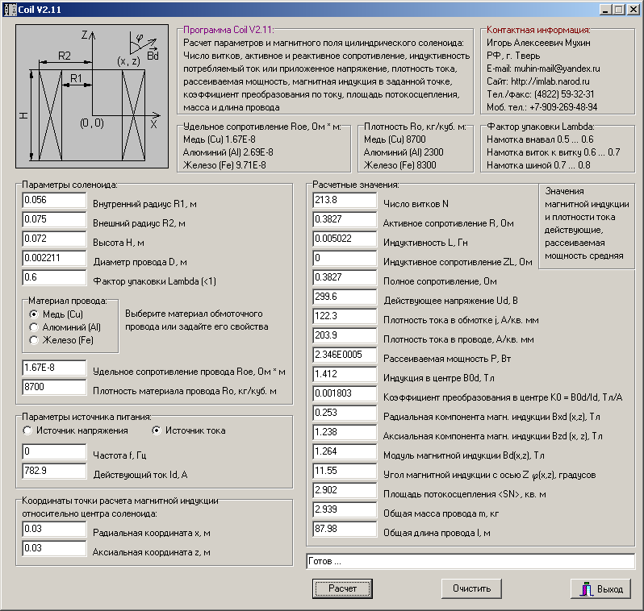
Рис. 5.1. Расчет катушки индуктора с помощью программы Coil: число витков примерно 215, активное сопротивление 0.3827 Ом, индуктивность 5.022 мГн.
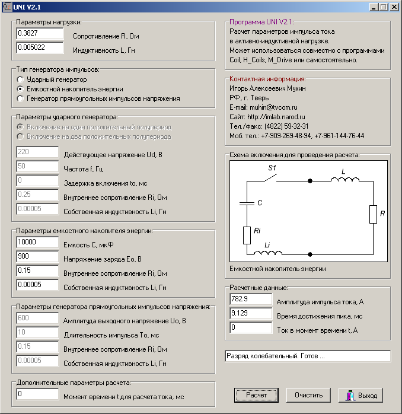
Рис. 5.2. Расчет параметров импульса тока в катушке с помощью программы UNI: емкостной накопитель 4 кДж 900 В, амплитуда импульса тока примерно 780 А, длительность - примерно 20 мс (удвоенное время достижения пика).
Перегрев провода обмотки за одиночный импульс тока амплитудой 780 А длительностью 20 мс рассчитан с помощью программы dTWire [2] и не превышает 2.1 0C (рис. 5.3) в приближении синусоидальной формы импульса.
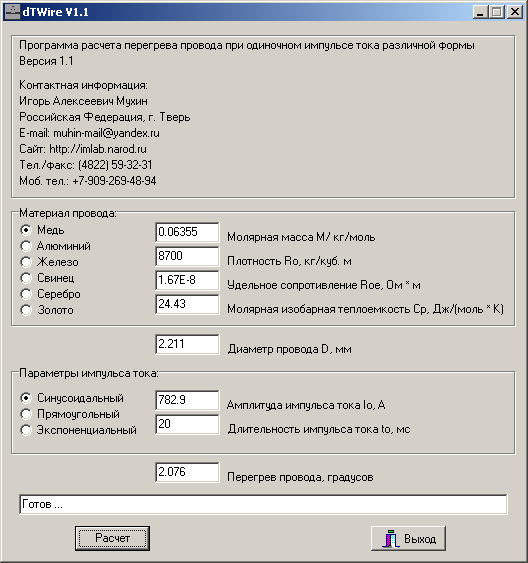
Рис. 5.3. Расчет перегрева обмотки за одиночный импульс тока с помощью программы dTWire.
Установка катушки в магнитопровод (стальной корпус) приводит к увеличению индуктивности, уменьшению амплитуды импульса тока, увеличению его длительности, а также повышению амплитуды магнитной индукции в зоне намагничивания и увеличению однородности намагничивающего поля. Так как поле, создаваемое даже обособленной катушкой без магнитопровода при работе с емкостным накопителем 4 кДж 900 В оказывается достаточным для намагничивания магнитных систем шаговых двигателей на постоянных магнитах ални (алнико), дополнительный расчет индуктора с учетом влияния магнитопровода не проводился.
6. Испытания установки
Активное сопротивление индуктора с кабелем подключения измерено мультиметром APPA-107N и составляет 0.40 Ом, хорошо согласуясь с рассчитанным значением 0.3827 Ом в сумме с дополнительным сопротивлением кабеля и разъема. Индуктивность индуктора с кабелем подключения 2.58 мГн измерена прибором VC6243 на частоте 1000 Гц, также вполне соответствуя рассчитанному значению 5.022 мГн с учетом довольно высокой частоты измерений.
Для контроля параметров импульса магнитной индукции в зоне намагничивания индуктора использовался импульсный тесламетр [9] с внешним аналоговым выходом с коэффициентом преобразования 1 В/Тл и осциллограф UTD2102CEL-R. Форма импульса магнитной индукции в центре рабочей зоны при снятой верхней крышке показана на рис. 6.1. Измеренная амплитуда магнитной индукции составляет 1.5 Тл, длительность импульса на уровне половины амплитуды примерно 15 мс, общая длительность импульса не превышает 50 мс. Измеренные параметры магнитного импульса достаточно хорошо согласуются с расчетными.
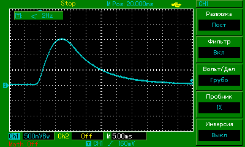
Рис. 6.1. Форма импульса магнитной индукции в центре зоны намагничивания индуктора (верхняя крышка снята): цена деления по вертикали 500 мТл/дел., амплитуда импульса магнитной индукции 1.5 Тл, цена деления по горизонтали 5 мс/дел.
7. Контроль качества намагничивания шаговых электродвигателей
1. При прокручивании вала электродвигателя вручную должны четко ощущаться шаги - скачкообразные движения ротора.
2. При закороченных обмотках электродвигателя можно приблизительно оценить тормозящий момент, прокручивая вал электродвигателя вручную и сравнивая с эталонным мотором.
3. С помощью осциллографа или вольтметра измеряется напряжение между двумя любыми фазами электродвигателя при его принудительном вращении с заданной частотой и сравнивается с эталонным мотором. Приблизительную оценку можно сделать, прокручивая вал электродвигателя вручную, позволяя ему более-менее свободно переходить скачком в следующую позицию (рис. 7.1).
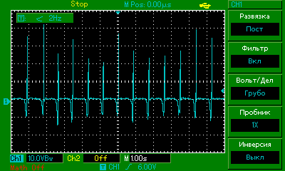
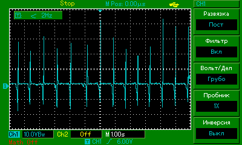
Рис. 7.1. Напряжение между двумя фазами шагового электродвигателя при прокручивании вала вручную. Слева - эталонный двигатель, справа - двигатель после намагничивания.
4. После намагничивания производится измерение тока холостого хода электродвигателя с помощью амперметра. Ток холостого хода после процедуры намагничивания должен уменьшаться. Если за один раз уменьшение недостаточное, то процедура намагничивания производится повторно, пока ток холостого хода не перестает уменьшаться, либо его величина не достигает приемлемого по условиям эксплуатации значения.
5. Производится замер крутящего момента электродвигателя при заданном потребляемом токе (или заданном напряжении питания) на заданной частоте вращения. После проведения намагничивания величина крутящего момента должна достичь максимума и соответствовать характеристикам электродвигателя.
6. При подключении электродвигателя к трехфазному преобразователю частоты производится оценка частоты, на которой происходит срыв вращения ротора (при увеличении частоты питающего напряжения) или старт двигателя (при уменьшении частоты питающего напряжения). Эти частоты должны соответствовать характеристикам мотора.
Ссылки:
17.03.2025
Альтернативные источники
энергии
Компьютеры и
Интернет
Магнитные поля
Механотронные системы
Перспективные
разработки
Электроника и
технология